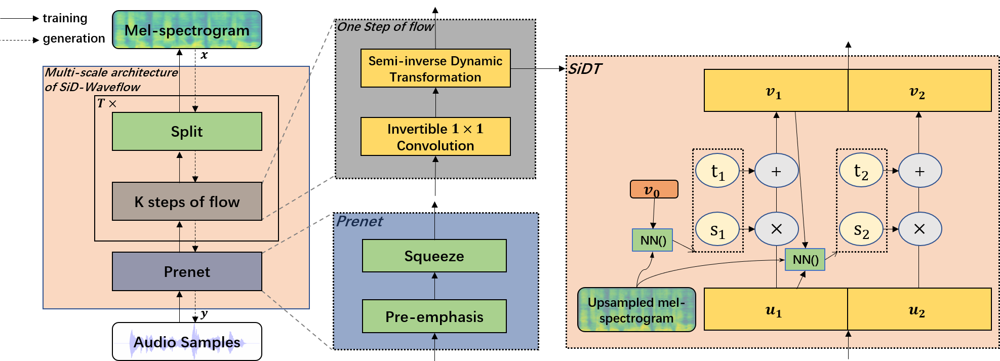

Source Code: SiD-W
Authors: Yuhan Li, Ying Shen*. (*: Corresponding Author.)
Abstract: Modern speech synthesis systems usually consist of an acoustic model and a vocoder. The acoustic models generate audio features which are then transformed into audio by the vocoders. The state-of-the-art vocoders require extensive training data. In this paper, we propose a novel vocoder, namely Semi-inverse Dynamic Waveflow (SiD-Waveflow) to avoid collecting large amounts of training data. SiD-Waveflow consists of a Prenet module, an invertible 1x1 convolution layer, and a Semi-inverse Dynamic Transformation (SiDT) module. The Prenet module is designed to improve the quality of the synthesized audio. The invertible 1x1 convolution can reorganize the order of the channels, which helps to improve the performance of SiD-Waveflow. The SiDT module is used as an invertible transformation in SiD-Waveflow, which can accelerate convergence speeds without pre-training. To our best knowledge, SiD-Waveflow is the first low-resource vocoder based on the flow architecture. Experimental results have demonstrated that SiD-Waveflow can generate audio with better quality than typical flow-based methods. Besides, SiD-Waveflow is more lightweight and requires lower computational resources.
System architecture:

Meaning of the columns in the table below:
| Ground truth | Waveglow | Wave-IDLT | SiD-Waveflow |
|---|---|---|---|
Meaning of the columns in the table below:
| Ground truth | SiD-Waveflow without prenet | SiD-Waveflow |
|---|---|---|